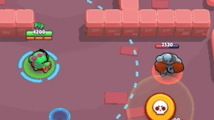

Базз (англ. Buzz) — хроматический боец класса «Убийца». Его можно получить за 500 хромакредитов на Дороге Старр в разделе хроматических бойцов или можно было с 30 уровня 7 сезона Brawl Pass (Лето Юрского Периода).
Базз имеет выше среднего запас здоровья и высокий урон. Его атака — звуковые волны, исходящие из свистка на небольшую дистанцию, а при помощи Супера Базз кидает поплавок в стену или во врага и притягивает себя к поплавку, оглушая противников в небольшой области. Базз Заряжает Супер, когда противник находится на нужном от него расстоянии. С помощью Гаджета он заряжает Супер сразу, но не оглушает им противников. С первой Звёздной силой увеличивается время оглушения вблизи, а со второй — увеличивается радиус зарядки Супера.
Основные атаки
Атака Базза конусовидная и от других атак эту отличает то, что она начинается справа своего радиуса и заканчивается слева, а не сразу по всему радиусу.
Базз кидает поплавок в стену или во врага и притягивает себя к месту нахождения поплавка. После того как Базз притянется к противнику с помощью Супера, враг будет ненадолго оглушен. Время оглушения будет зависеть от дистанции. Чем дальше от противника будет использован Супер, тем дольше будет оглушен противник (максимально 1,5 секунд без использования Звёздной силы).
Усиления
«Минимальная продолжительность оглушения от Супера Базза увеличена на 0,5 с.» Враги, попавшие под эффект Супера, остаются неподвижными еще дольше.
«Радиус зарядки Супера Базза увеличивается на 33%.» С этой Звёздной силой область заряда Супера значительно увеличивается, что увеличивает возможность быстрее его зарядить. Может быть полезно в Одиночном Столкновении.
«Мгновенно заряжает Супер, однако при этом следующий «Бросок торпеды» не сможет оглушить противников. Зарядов на матч: 3.» Этот гаджет мгновенно заряжает Супер, но он будет срабатывать без эффекта оглушения. Полезно, если вам нужно срочно убежать или наоборот — притянуться к противникам.
«В течение 12 с. Базз видит сквозь кусты в радиусе действия своего Супера. Зарядов на матч: 3.» При помощи этого гаджета, Базз может в радиусе своего Супера увидеть все что есть в кустах.